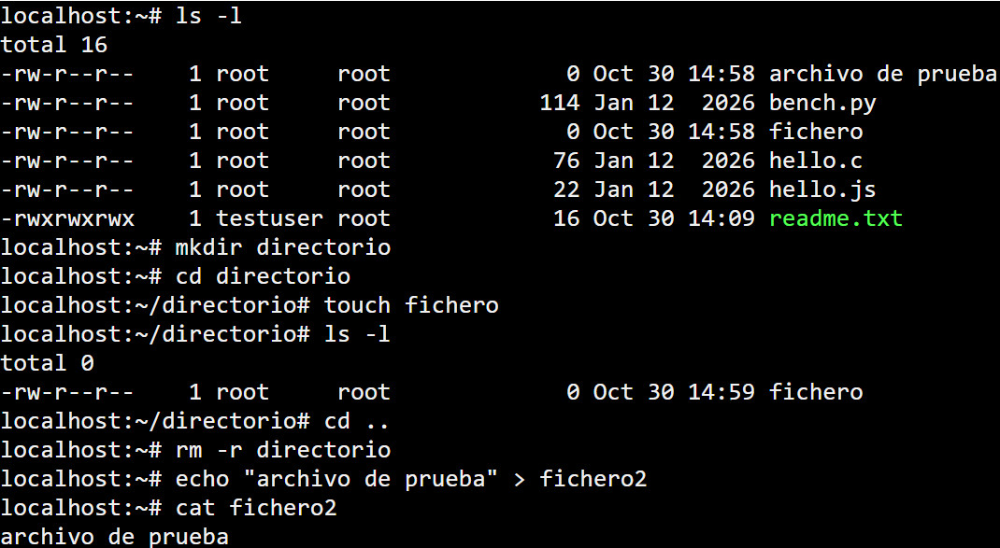
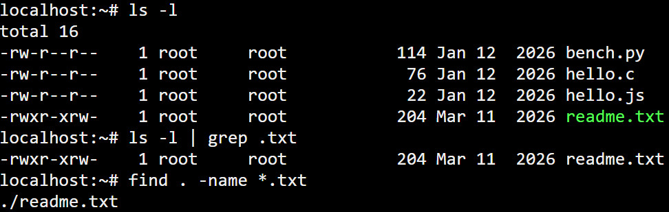
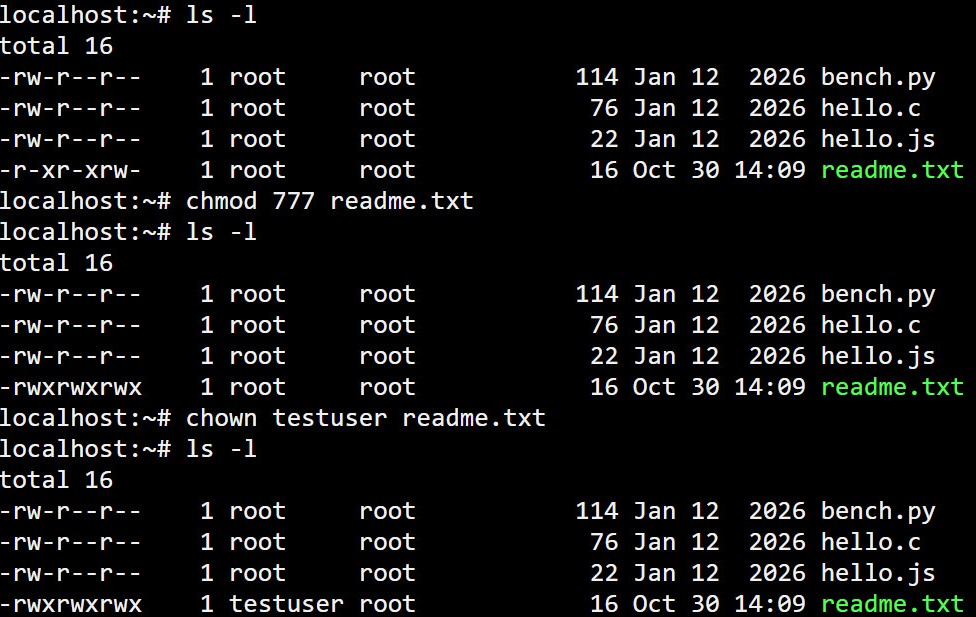

Comandos y conceptos básicos de GNU/Linux

Los sistemas GNU/Linux son un conjunto de sistemas operativos de tipo UNIX, multiproceso y multiusuario pudiendo haber varios procesos ejecutándose por diferentes usuarios En el ámbito de la seguridad en los sistemas de información, dominar Linux es fundamental porque permite interactuar directamente con los recursos mediante intérpretes de comandos como Bash para controlar los procesos del sistema. Una distribución de Linux muy utilizada en ciberseguridad es Kali Linux, que incluye herramientas de análisis de vulnerabilidades, pruebas de penetración y auditoría de seguridad.
Trabajo con ficheros y directorios
En GNU/Linux todo se maneja como si fuera un fichero, incluidos los directorios y los dispositivos.
pwd: Indica el directorio actual de trabajo.ls: Muestra el contenido de un directorio. Se puede usar-lpara mostrar información detallada (permisos, propietario, tamaño) y-apara incluir archivos ocultos.cd: Se utiliza para cambiar el directorio actual.mkdir: Crea un directorio nuevo.touch: Permite la creación de un archivo vacío.rm: Sirve para borrar un fichero; utilizado con la opción-rborra directorios y sus contenidos de manera recursiva.cat: Muestra en pantalla el contenido de un fichero de texto.echo: Muestra un mensaje en la terminal.

Búsqueda, filtrado y tuberías
Para el análisis de registros e investigación, es esencial saber localizar y redirigir la información:
man: Permite acceder a las páginas de manual de referencia de los diferentes comandos.find: Encuentra un archivo en una jerarquía de directorios empleando diferentes criterios.grep: Permite buscar una cadena de texto introducida como un patrón de búsqueda en un conjunto de ficheros.
Además, el uso de tuberías (|) permite conectar diferentes comandos entre sí, utilizando la
salida de un proceso como entrada para otro. Las redirecciones (>,
>>, <) envían los resultados directamente a ficheros de texto para
automatizar tareas.

Administración y permisos
El sistema garantiza que cada usuario solo acceda a los recursos autorizados mediante tres tipos de permisos: lectura (r), escritura (w) y ejecución (x).
chmod: Modifica los permisos para los propietarios actuales del sistema.chown: Cambia el dueño o propietario de un fichero.
Para practicar de forma segura y no afectar tu máquina principal, puedes probar estos comandos montando una distribución en una máquina virtual o utilizando terminales online desde el navegador.
